Welcome to the Dodo Page
 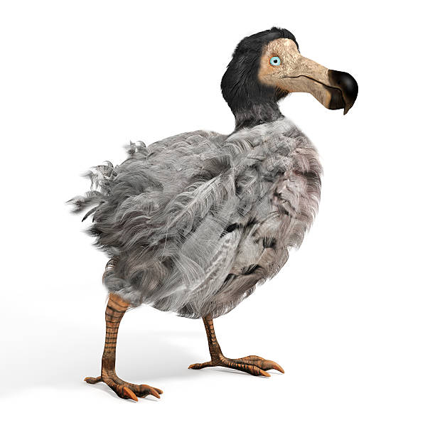
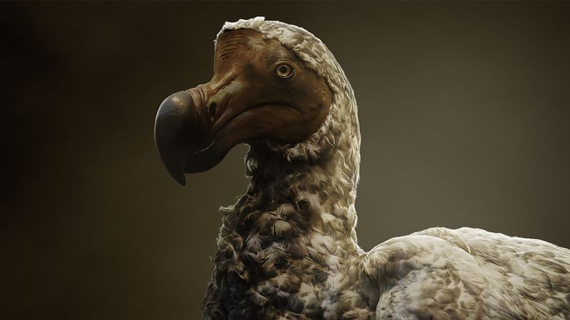
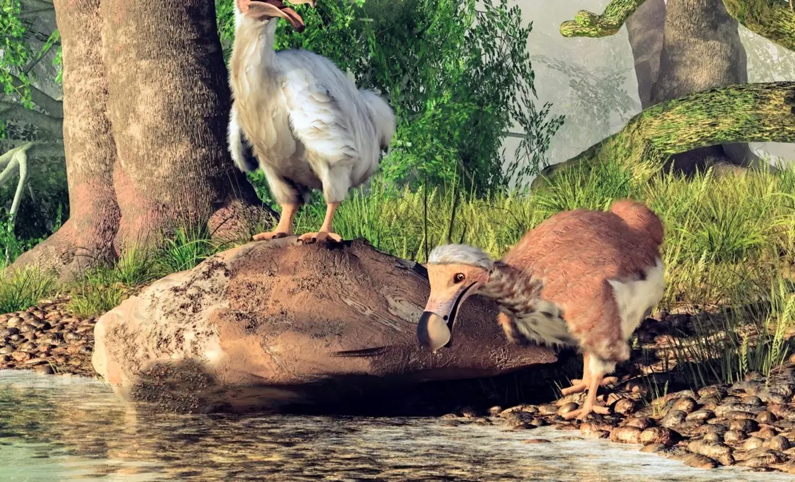
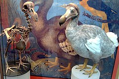
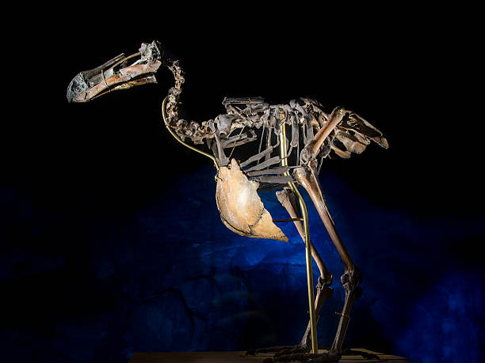
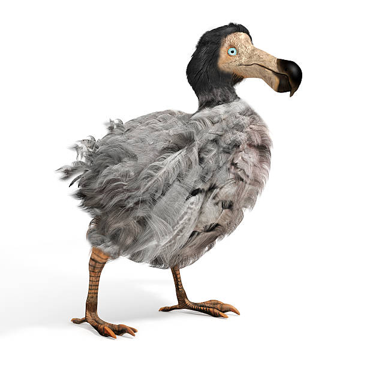
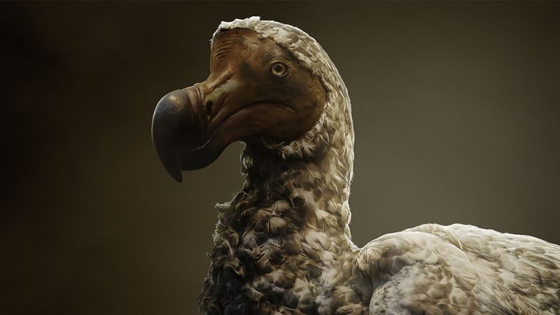
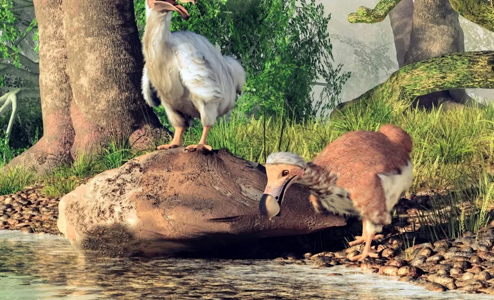
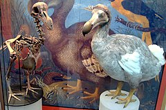
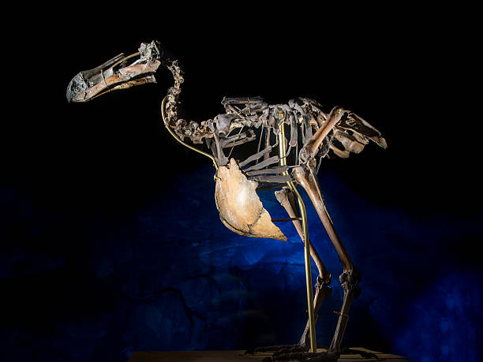
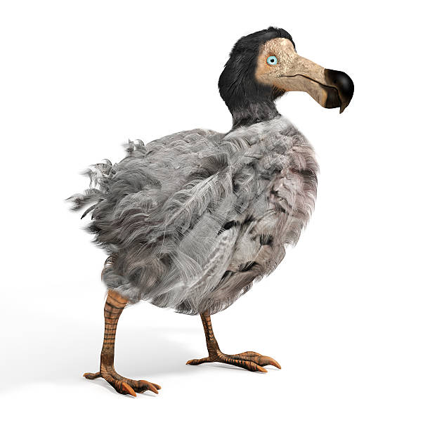
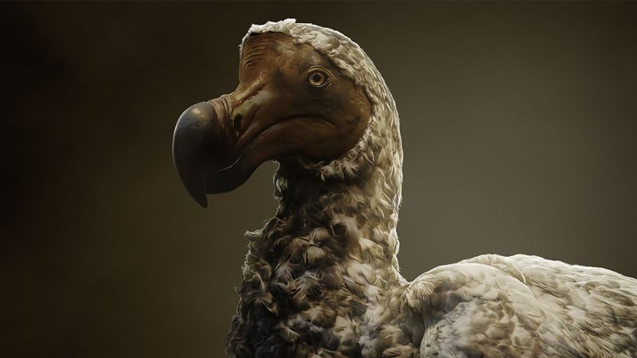
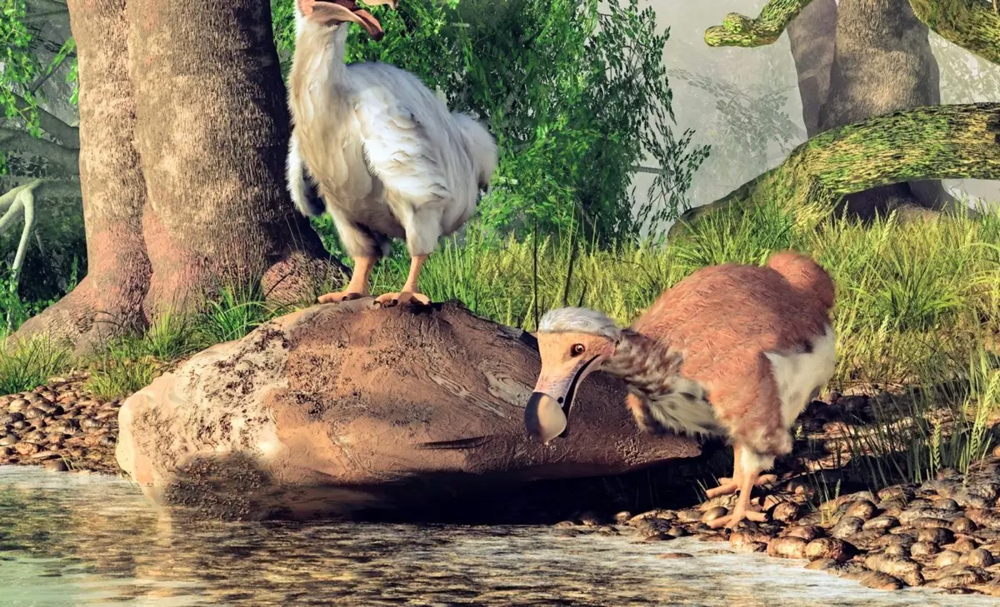
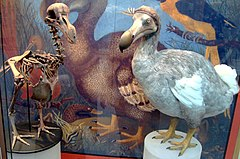
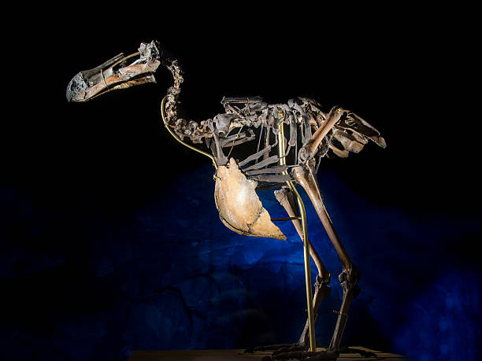
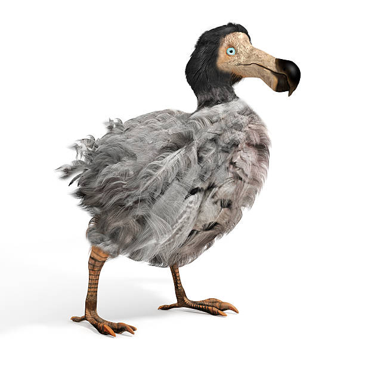
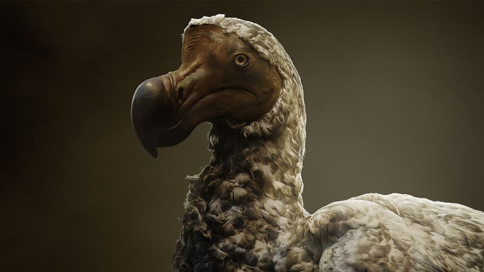
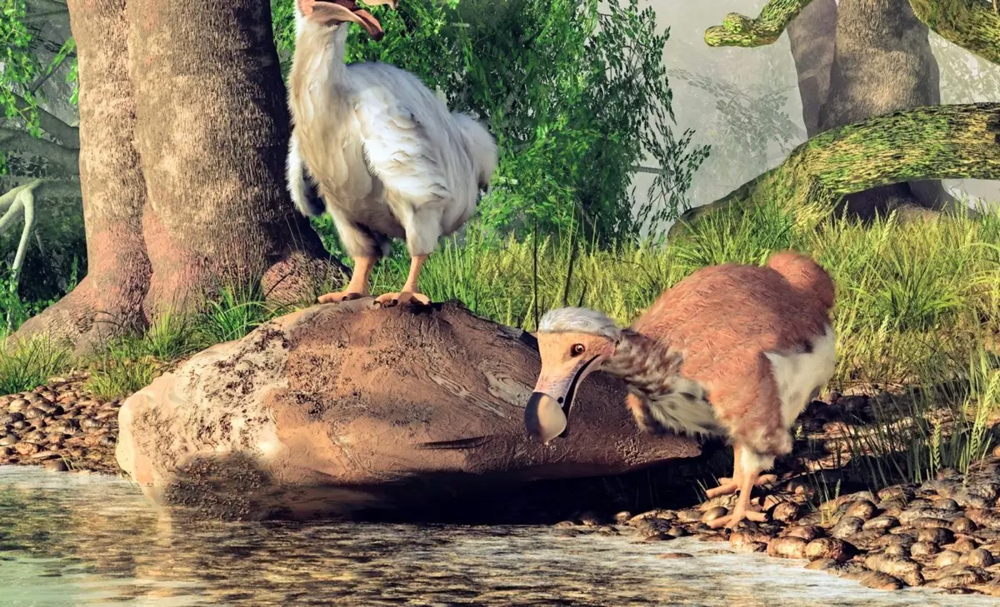
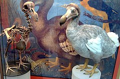
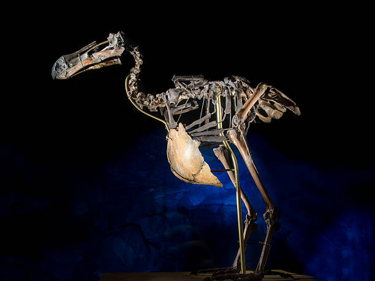
The dodo (Raphus cucullatus), a flightless bird native to the island of Mauritius in the Indian Ocean, has become one of the most iconic symbols of extinction caused by human activity. Measuring about three feet tall and weighing between 15 and 20 kilograms, the dodo was well-adapted to its isolated, predator-free environment. With no natural threats, the dodo evolved to become flightless, relying on its sturdy legs for movement and feeding. Its diet consisted of a wide variety of fruits, seeds, roots, and possibly small invertebrates, making it a vital part of the island’s ecosystem. The bird’s robust beak and large body allowed it to thrive, and fossil evidence suggests it played a crucial role in dispersing seeds and maintaining the ecological balance of its habitat.
The arrival of humans on Mauritius in the late 16th century marked the beginning of the dodo’s decline. Portuguese sailors first encountered the bird and named it “dodo,” derived from the Dutch word “dodoor,” meaning “sluggard” or “lazy,” due to its seemingly docile and unwary nature. However, this perceived naivety was merely a result of the bird’s lack of exposure to predators. Early settlers and visiting sailors hunted the dodo for its meat, although accounts suggest it was not particularly palatable. Compounding the problem, humans introduced invasive species such as rats, pigs, and monkeys to the island, which fed on dodo eggs laid in ground nests. These combined pressures led to a sharp decline in the dodo population, making it one of the first documented cases of human-driven extinction.
By the late 1600s, less than a century after its discovery, the dodo was declared extinct. Historical records and accounts of the bird are limited, as it disappeared before modern scientific documentation practices were established. Much of what we know about the dodo comes from drawings, written descriptions by sailors, and a handful of preserved skeletal remains found in Mauritius. These records reveal a bird that was not only unique in appearance but also integral to its ecosystem. For instance, some plant species on Mauritius, such as the tambalacoque tree, were thought to rely on the dodo for seed dispersal, showcasing the intricate interconnectedness of island life. The loss of the dodo underscores how the destruction of a single species can ripple through an entire ecosystem.
The story of the dodo has transcended its historical context to become a symbol of the fragility of biodiversity. It serves as a cautionary tale of how human activities—whether through direct exploitation or unintended ecological disruption—can irreversibly alter the natural world. Modern conservation efforts, inspired in part by the dodo's legacy, aim to prevent similar tragedies by addressing threats such as habitat destruction, climate change, and the introduction of invasive species. Organizations worldwide now work to protect endangered species and restore ecosystems, drawing lessons from the dodo's extinction to create strategies for coexistence and sustainability. The dodo's story is a reminder of the importance of preserving the delicate balance of life on Earth.
Despite its extinction, the dodo remains alive in human consciousness as a symbol of resilience and the urgency of conservation. Scientific studies of its remains continue to yield insights into its biology, behavior, and ecological role, contributing to our understanding of island ecosystems and the factors that lead to species extinction. The bird has also become a cultural icon, inspiring literature, art, and environmental movements. Its story challenges us to reflect on our relationship with nature and the responsibility we bear to protect it. By learning from the past, we can strive to create a future where the loss of species like the dodo becomes a rarity, not a recurring consequence of human activity.